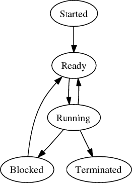

10.1. Теория
10.1.1. Процессы
Выполняемый экземпляр программы называется процессом. Каждый процесс имеет собственным защищённым сегментом памяти, называемым адресным пространством. Это адресное пространство состоит из двух областей: области текста и области данных. В области текста хранится актуальный программный код, который сообщает системе, что следует выполнить. Область данных содержит постоянные данные и данные времени выполнения процесса. Множество процессов выполняются на одном или нескольких ядрах, поэтому ядро ОС распределяет процессорное время между всеми процессами. Такой режим называется режимом разделения времени.
Таблица 10.1. Структура процесса
| Поле | Описание |
|---|---|
| pid | Идентификатор – порядковый номер процесса. |
| ppid | Идентификатор родительского процесса. |
| euid | Идентификатор пользователя, от имени которого работает процесс. |
| ruid | Идентификатор пользователя, запустившего процесс. |
| egid | Идентификатор группы, от имени которой работает процесс. |
| rgid | Идентификатор группы, от которой был запущен процесс. |
| fd | Указатель на список открытых файловых дескрипторов. |
| vmspace | Указатель на адресное пространство процесса. |
В таблице 10.1. представлены наиболее важные поля информации о процессе, которая хранится ядром. Каждый процесс может быть идентифицирован по уникальному PID (идентификатору процесса), который представлен положительным числом. Как мы увидим чуть позже, пользовател может легко получить идентификатор процесса. Каждому процессу соответствует UID (user ID) и GID (group ID). Каждый процесс имеет настоящий UID, с которым он был запущен, и действующий UID, под которым он выполняется. Обычно действующий UID равен реальному, но некоторые программы указывают системе изменить действующий UID. Такое поведение используется для управления доступом. Это означает, что если пользователь joe выполняет команду, скажем, less, то less может открыть лишь файлы, доступные joe для чтения. Также процессам присваиваются и идентификаторы групп: реальный GID и действующий GID.
Многие процессы открывают файлы; сущность, с помощью которой можно управлять файлами, называется файловым дескриптором. Ядро ведёт список открытых файловых дескрипторов по каждому процессу. Поле fd содержит указатель на список открытых файлов. В поле vmspace хранятся указатели на адресное пространство процесса.
Изображение 10.1. Состояния процесса

Не все процессы, выполняемые в данный момент, нуждаются в процессорном времени. Например, некоторые процессы могут ожидать завершение операции подсистемы ввода-вывода или могут быть остановлены. Не вдаваясь в тонкости, скажем, что процессы могут находиться в состоянии запуска, выполнения, готовности (выполняться), могут быть блокированными или завершёнными. Изображение 10.1 иллюстрирует жизненный цикл процесса. Процесс, который был завершён, но информация о котором осталась в таблице процессов, часто называют зомби-процессом. Зомби-процессы могут быть полезны для того, чтобы родительский процесс смог получить сигнал их завершения или для того, чтобы временно зарезервировать запись в таблице процессов.
10.1.2. Создание новых процессов
Новые процессы создаются при помощи системного вызова fork(). Этот системный вызов копирует адресное пространство процесса и информацию вызывающего процесса и создаёт новый процесс, называемый дочерним. Дочерний процесс продолжает выполнение в той же точке, что и родительский, но завершит системный вызов fork() с другим кодом возврата. По этому коду инициатор и дочерние процессы корректируют продолжение выполнения программного кода. Следующий пример кода на языке программирования C показывает вызов fork() в действии:
#include#include #include int main() { pid_t pid = fork(); if (pid == 0) printf("Привет, я потомок!\n"); else printf("Привет, я родитель! PID потомка -- %d!\n", pid); return 0; }
Эта небольшая программа вызывает fork() и сохраняет код завершения fork() в переменную pid; fork() возвращает значение 0 и PID дочернего процесса. В данном случае мы можем использовать простое условие, чтобы вывести сообщение, соответствующее коду завершения.
Вы можете задуматься, как можно вызвать другую программу, т.к. fork() только дублирует уже существующий процесс. Это хороший вопрос. И только средствами fork() его не решить. Ядра UNIX-подобных операционных систем предоставляют набор системных вызовов, начиная с exec, которые могут загрузить образы новых программ из текущего процесса. В начале этой главы мы определили, что процесс – это выполняемая программа, загружающая в память образ, записанный на информационном носителе. Так, семейство системных вызовов exec даёт возможность подменить запущенный процесс вызываемой программой, хранящейся на каком-то носителе. Само по себе это не очень полезно, т.к. каждый раз, когда запускается exec, исходный код вызова (или программа) удаляется из процесса. Это можно наблюдать в работе следующей программы, написанной на C:
#include#include int main() { execve("/bin/ls", NULL, NULL); /* Сообщение выведется только в случае некорректного завершения вызова execve() */ printf("Hello world!\n"); return 0; }
Эта программа выполняет ls с помощью вызова execve(). Сообщение, выводимое с помощью функции printf(), никогда не будет показано, т.к. образ программы будет перезаписан ls. Таким образом, комбинация fork() и вызова программ является мощным средством; процесс может создать собственный клон и "принести его в жертву" ради запуска другой программы. Следующая программа демонстрирует такое поведение:
#include#include #include int main() { pid_t pid = fork(); if (pid == 0) execve("/bin/ls", NULL, NULL); printf("Hello world!"); return 0; }
Вначале эта программа создаёт собственный форк. Затем образ дочернего процесса заменяется вызванным экземпляром ls, в то время как родительский процесс выводит на экран сообщение «Hello world!» и завершается.
Многие программы следуют такой процедуре, включая оболочки командной строки, когда задача запускается из терминала. По факту, все процессы в UNIX-подобных системах так или иначе порождаются процессом init, который является первой программой, запускаемой при старте системы.
10.1.3. Потоки
Хотя форки очень удобны при распараллеливании (например, web-сервер может создать несколько дочерних процессов для обработки запросов), они могут быть довольно дорогостоящими в плане ресурсов. Копирование всего процесса занимает определённое время и оно увеличивается, если процесс использует разделяемые данные. Эта проблема решается использованием более легковесной альтернативы, позволяющей выполнять программу в нескольких потоках. Каждый поток выполняется отдельно, но данные разделяются между всеми потоками.
Создание хороших многопоточных приложений требует высокой квалификации и знаний о разделении данных и блокировках. Проектируя общий доступ к данным, программист должен быть внимателен, чтобы не вызвать ошибки вроде состояния гонки (race condition), когда работа всей системы зависит от порядка выполнения участков кода.
10.2. Анализ запущенных процессов
10.2.1. Вывод списка выполняемых процессов
В UNIX-системах имеется команда ps, которая отображает список выполняемых процессов. К сожалению, эта команда является демонстрацией отсутствия какой-либо стандартизации. Варианты ps, используемые в BSD и System V, принимают свои собственные наборы параметров. К счастью, GNU/Linux реализует оба стандарта передачи аргументов, также предоставляя и привычные GNU "длинные параметры". Аргументы, начинающиеся с дефиса, интерпретируются как параметры System V, а опции без дефиса – как принятые в BSD. Мы будем использовать соглашения System V.
Если запустить ps без параметров, то будут отображены все процессы, инициализованные пользователем, запустившим ps. Например:
$ ps
PID TTY TIME CMD
8844 pts/5 00:00:00 bash
8862 pts/5 00:00:00 ps
Из вывода программы можно получить много полезной информации. Как вы можете видеть, показаны два процесса: оболочка командной строки (bash) и собственно процесс ps. В рассматриваемом примере мы видим четыре колонки с информацией. PID – это идентификатор процесса, TTY – контролирующий терминал, TIME – это используемое процессом процессорное время, а CMD – команда, которой была запущена программа.
Иногда вам может понадобиться вывести более обширный список запущенных процессов. Добавьте параметр -a, чтобы отобразить все процессы, ассоциированные с терминалом:
$ ps -a
PID TTY TIME CMD
7487 pts/1 00:00:00 less
8556 pts/4 00:00:10 emacs-x
11324 pts/3 00:00:00 ps
Как вы можете видеть, отображены процессы, контролируемые различными терминалами. Однако, в отличие от обычного вывода ps, показаны только процессы, управляемые терминалом в данный момент. Например, здесь не показана оболочка командной строки, из которой была вызвана программа ps.
Также вы можете вывести все запущенные процессы, включая те, что не ассоциированы с каким-либо терминалом, используя параметр -A:
$ ps -A | head -n 10
PID TTY TIME CMD
1 ? 00:00:01 init
2 ? 00:00:00 migration/0
3 ? 00:00:00 ksoftirqd/0
4 ? 00:00:00 watchdog/0
5 ? 00:00:00 migration/1
6 ? 00:00:00 ksoftirqd/1
7 ? 00:00:00 watchdog/1
8 ? 00:00:00 events/0
9 ? 00:00:00 events/1
Вы можете отобрзить все процессы с определённым идентификатором пользователя, используя аргумент -U. Эта опция в качестве параметра принимает имя пользователя или список имён, разделённых запятой. Следующая команда выведет все процессы, выполненные пользователями xfs и rpc:
$ ps -U xfs,rpc
PID TTY TIME CMD
2409 ? 00:00:00 portmap
2784 ? 00:00:00 xfs
Подобно этому вы можете вывести процессы с определённым ID группы или нескольких, используя параметр -G:
$ ps -G messagebus,haldaemon
PID TTY TIME CMD
8233 ? 00:00:00 dbus-daemon
11312 ? 00:00:00 hald
11320 ? 00:00:00 hald-addon-keyb
11323 ? 00:00:00 hald-addon-acpi
Если вам нужен список процессов, соответствующих физическому или псевдо-терминалу, вы можете использовать параметр -t:
$ ps -t tty2
PID TTY TIME CMD
2655 tty2 00:00:00 getty
10.3. Управление процессами
10.3.1. Посылка сигналов
Сигналы – низкоуровневая, но эффективная форма межпроцессного взаимодействия (англ. Inter-Process Communication, IPC). Сигнал – это номер, по которому процесс распознаёт определённое значение. Каждому сигналу соответствует определённый обработчик. Процессы могут определять свои собственные сигналы или вообще игнорировать их. Некоторые сигналы (обычно SIGKILL и SIGSTOP) игнорировать невозможно. Каждому сигналу соответствует символическое имя.
Лишь несколько сигналов могут быть интересны для интерактивного использования UNIX-подобных систем. Вот некоторые из них:
- SIGKILL (9)
- Принудительное завершение процесса.
- SIGTERM (15)
- Запрос на терминацию процесса. В отличие от SIGKILL, программа может проигнорировать получение этого сигнала.
- SIGHUP (1)
- Традиционно, этот сигнал уведомлял о потере соединения с управляющим терминалом. Но сейчас некоторые процессы (например, inetd) по получению этого сигнала перечитывают файл конфигурации.
Для посылки сигналов процессам используется команда kill. По умолчанию kill посылает сигнал SIGTERM. Для посылки этого сигнала вы должны указать в качестве параметра ID целевого процесса. Например:
- $ kill 15631
Чтобы послать другой сигнал, вы должны использовать одну из следующих опций: -<номер сигнала> или -<имя сигнала>. Так, обе следующие команды посылают процессу с идентификатором 15631 сигнал SIGKILL:
- $ kill -9 15631
- $ kill -SIGKILL 15631
10.3.2. Не мешай другим (англ. Being nice to others)
В порыве альтруизма вы можете быть любезны по отношению к другим пользователям ресурсов компьютера. Если вы планируете запустить процесс, интенсивно использующий процессор, но не желаете мешать работе другим пользователям системы (или другим процессам), вы можете несколько увеличить значение «любезности» (niceness) процесса. На практике это означает, что вы можете влиять на приоритет, с которым выполняется процесс. Обычный приоритет имеет значение 0. При увеличении этого значения приоритет будет уменьшаться. Изменить приоритет процесса можно командой nice; для указания числового значения приоритета используется параметр -n:
- $ nice -n 20 cputimewaster
Максимальный номер, который можно передать команде nice, зависит от реализации. Если программа запускается с помощью nice, но при этом приоритет не задан, он будет установлен в значение по умолчанию – 10. На случай, если вам интересно: да, вы так же можете быть грубы и мешать другим пользователям и процессам, но такое поведение позволено лишь суперпользователю. Вы можете увеличить приоритет процесса, указав отрицательное значение.
Вы также можете изменить приоритет уже выполняемого процесса с помощью команды renice. Для этого нужно указать идентификатор процесса (-p PID), пользователя (-u <имя/идентификатор пользователя>) и группу (-u <имя/идентификатор группы>). Новый приоритет указывается первым параметром.
Приоритет процесса можно только увеличить. И, конечно, никто кроме суперпользователя не может изменять приоритет процесса других пользователей.
Давайте рассмотрим пример того, как можно изменить приоритет процесса с PID 3108:
- $ renice 14 -p 3108
10.4. Управление задачами
Часто бывает полезно объединить процессы в группу с целью управления, например, в случае рассылки сигнала разом всем процессам группы. Не будет неожиданным узнать, что UNIX имеет группы процессов. После клонирования, дочерний процесс автоматически становится членом группы родительского процесса. Также новые группы процессов могут быть созданы путём назначения одного процесса главным и добавления в группу других процессов. Идентификатором группы процессов является PID основного процесса.
Все современные оболочки UNIX добавляют вызываемые процессы в собственную группу процессов. Все процессы, вызываемые в одном конвеере, тоже обычно объединяются в одну группу. В следующих командах, вызванных в конвеере
cat | tr -s ' ' | egrep 'foob.r'
оболочка командной строки выполнит приблизительно такие действия:
- Будут созданы форк дочерних процессов.
- Первый процесс в конвеере будет добавлен в группу процессов с собственным PID в качестве ID группы и тем самым станет главным процессом. Затем в группу процесса будут добавлены остальные программы, вызываемые в конвеере.
- Файловые дескрипторы процессов будут перенастроены по форме конвеера.
- Программы будут выполнены.
Оболочка использует группы процессов для реализации контроля над задачами. Оболочка может выполнять множество задач в фоновом режиме, также могут быть остановленные задачи и одна задача, выполняемая в интерактивном режиме. Интерактивная задача связана с терминалом стандартным потоком ввода (имеется в виду, что весь пользовательский ввод передаётся интерактивной задаче).
10.4.1. Остановка и возобновление задач
Задача, выполняемая в интерактивном режиме (и потенциально принимающая пользовательский ввод в терминал) может быть остановлена нажатием комбинации клавиш Ctrl + z. Это остановит выполнение задачи и передаст контроль над терминалом обратно оболочке. Давайте попробуем запустить команду sleep, которая ожидает переданное в качестве аргумента количество секунд:
- $ sleep 3600
- <Ctrl-z>
- [1]+ Stopped sleep 3600
Остановка задачи означает, что sleep прекращает отсчёт, т.е. задача полностью останавливается. Вы можете получить список задач с помощью команды jobs:
- $ jobs
- [1]+ Stopped sleep 3600
Отображаются номер задачи (1), её статус и команда, с помощью которой запустили задачу. Давайте выполним другую программу, также остановим её и вновь выведем список задач.
- $ cat
- Ctrl-z
- [2]+ Stopped cat
- $ jobs
- [1]- Stopped sleep 3600
- [2]+ Stopped cat
Как и ожидалось, вторая задача так же остановлена, и ей присвоен порядковый номер 2. Знак плюса (+), стоявший ранее у первой задачи, сменился знаком минуса (-), а плюсом отмечена вторая задача. Плюсом отмечается текущая задача. Команды bg и fg, вызванные без параметров, оперируют именно текущими задачами.
Обычно, когда вы работаете с задачами, вам бывает нужно снова вернуть задачу в интерактивный режим. Это можно сделать с помощью команды fg. Выполнение fg без параметров переключится на последнюю задачу. Большинство командных оболочек для индикации выводят имя задачи, которая переходит в интерактивный режим.
- $ fg
- cat
Конечно, не всегда бывает нужно перевести в интерактивный режим именно последний фоновый процесс. Вы можете переключиться на любой другой процесс, передав команде fg номер процесса, добавив к нему знак процента (%):
- $ fg %1
- sleep 3600
Переключение задач может быть очень полезным во время интенсивного интерактивного использования командной строки. Например, предположим, что вы редактируете файл в текстовом редакторе и хотите выполнить какие-нибудь другие команды и вновь вернуться к редактированию файла. Вы можете приостановить редактор комбинацией Ctrl + z, выполнить команду и вернуться в редактор при помощи fg.
10.4.2. Фоновые задачи
В дополнение к интерактивному режиму задачи могут выполняться в фоне. Это означает, что они выполняются, но ввод, принимаемый терминалом, не будет передаваться этим процессам. Большинство командных оболочек также настраивают фоновые процессы таким образом, чтобы их вывод направлялся в активную консоль.
Остановленный процесс может быть возобновлён в фоновом режиме с помощью команды bg:
- $ sleep 3600
- [1]+ Stopped sleep 3600
- $ bg
- [1]+ sleep 3600 &
- $
Вы можете увидеть все задачи при помощи команды jobs:
- $ jobs
- [1]+ Running sleep 3600 &
Как и в случае fg, вы можете перевести задачу в фоновый режим, указав номер задачи при вызове bg:
- $ bg %1
- [1]+ sleep 3600 &
Также вы можете запустить программу сразу в фоновом режиме, завершив её знаком амперсанда (&). Например:
- $ sleep 3600 &
- [1] 5078